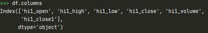
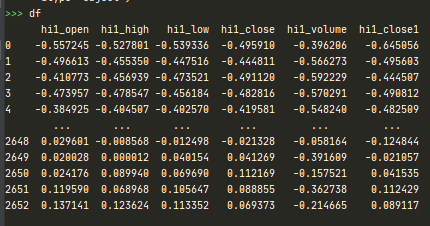
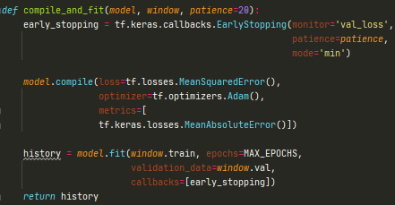
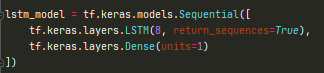
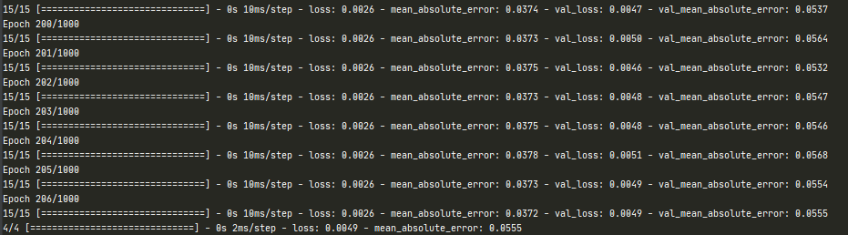
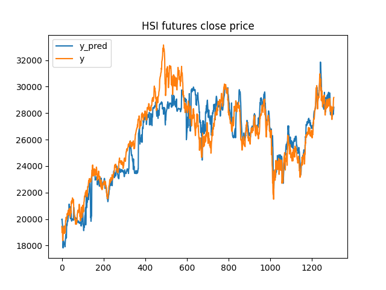
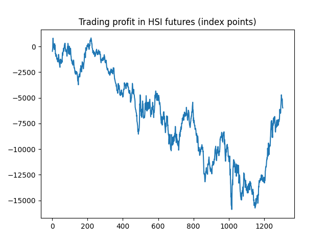

Introduction
LSTM is a popular method for time series forecasting, in this article we will use TensorFlow LSTM model to predict HSI futures next close price. This article is inspired by many research paper I have read before, which some of them can predict the price very well using LSTM model using some simple data. We are not going to dive into the mathematics details, for the mathematics details please read this article.
Data
Daily data are used in this article. We will use StandardScaler to normalize our data. The start of the date is 20100101 and the end is 20201009, 2656 days in total. We will spilt our data into 7:2:1, which is 70% for training, 20% for validation, 10% for testing.
After the preprocessing, the data will look like this.
LSTM model setting
Our lookback period of LSTM model is 22 and makes single-time-step prediction. We will try one LSTM layer with 8 units. We use MeanSquaredError as our loss function and use MeanAbsoluteError to evaluate our model. The maximum number of epoch will be 1000. We also add an early stopping to stop training if MeanSquaredError on our validation data is not improving to reduce over-fitting.
 LSTM results
We will initially train our LSTM model using the first 1900 data points, then we will make 100 predictions using the trained model. After 100 predictions, we will retrain our model by adding extra 50 data points, and repeat until we predict all data points.
Predicting stock price is a difficult task, by using the simple data in our example, LSTM does not have strong predictive power. On the other hand, neural network are sensitive to hyperparameters, for example, the number of units and layers, learning rate. It is difficult to train a robust model to make predictions, due to the variety choice of hyperparameters can produce different results. We only bet on a robust trading signal, however, we can simulate the trading profit by back-testing this trading signal.
Back-testing results
Our trading strategy is simple, by the end of the day, if the predicted close price of HSI futures for tomorrow is high than the current close price, our position will be 1, otherwise -1.
The performance of our trading strategy is bad, it lost 6000 index points over 1306 days. It can due to the low quality of input, over-fitting, the choice of hyperparameters.
We can try to improve our prediction model by adding more information into our training data, for example, fundamental data, technical indicators. Optimization of hyperparameters is also important, GridSearchCV is a common technique for searching hyperparameters.
References
1. https://www.datacamp.com/community/tutorials/lstm-python-stock-market
2. http://colah.github.io/posts/2015-08-Understanding-LSTMs/